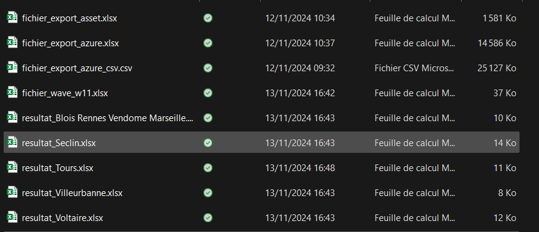

Migration vers Windows 11

Description du Projet
Le projet visait à migrer les postes de travail de l'organisation vers Windows 11 tout en automatisant la vérification des prérequis système grâce à un script Python. En s'appuyant sur des fichiers exportés depuis Azure, contenant des informations sur les versions des systèmes d'exploitation et l'espace de stockage disponible, le script a permis d'automatiser la validation de la migration et de générer des rapports sur les postes prêts ou nécessitant des ajustements. Cette solution a contribué à rationaliser le processus, réduire les erreurs manuelles et assurer une traçabilité complète.
Technologies Utilisées
- Python (Script d'automatisation)
- Pandas (Manipulation des données Excel)
- OpenPyXL (Mise en forme des fichiers Excel)
- Azure (Source des informations des appareils)
- ServiceNow (Source des informations des appareils)
- Excel (Support pour les rapports)
Fonctionnalités Principales
- Extraction des données depuis un fichier exporté d'Azure (nom des appareils, espace disque, version de l'OS)
- Vérification automatique de l'espace disque minimum et de la compatibilité avec Windows 11
- Fusion avec le fichier export de l'asset de ServiceNow pour inclure des informations supplémentaires (état des appareils, etc.)
- Génération de rapports Excel avec des feuilles séparées pour les appareils compatibles et non compatibles
- Application d'un style conditionnel (coloration des lignes en vert pour les migrations réussies ou validées)
Script Python Initial (gérant seulement 1 site)
import pandas as pd
from openpyxl import load_workbook
from openpyxl.styles import PatternFill
def extract_matching_names(fichier_export_azure, fichier_wave_w11, fichier_export_asset, output_file):
# Lire les fichiers Excel
df1 = pd.read_excel(fichier_export_azure)
df2 = pd.read_excel(fichier_wave_w11)
df3 = pd.read_excel(fichier_export_asset)
# Sélectionner uniquement les colonnes souhaitées
columns_to_keep = ['Device name', 'Free storage', 'OS version']
df1_selected = df1[columns_to_keep].copy()
# Diviser la colonne "Free storage" par 1000
df1_selected['Free storage'] = df1_selected['Free storage'] / 1000
# Remplacer les valeurs de la colonne "OS version"
df1_selected.loc[:, 'OS version'] = df1_selected['OS version'].apply(
lambda x: 'Windows 11' if str(x).startswith('10.0.22') else 'Windows 10'
)
# Ajouter la colonne "State" en vérifiant le troisième fichier
df1_selected = df1_selected.merge(df3[['Asset tag', 'State']], left_on='Device name', right_on='Asset tag', how='left')
# Supprimer la colonne "Asset tag" après la fusion
df1_selected.drop(columns=['Asset tag'], inplace=True)
# Supposons que les noms soient dans une colonne appelée 'Device name'
matching_names = df1_selected[df1_selected['Device name'].isin(df2['Device name'])]
missing_names = df2[~df2['Device name'].isin(df1['Device name'])]
# Écrire les résultats dans un nouveau fichier Excel
with pd.ExcelWriter(output_file) as writer:
matching_names.to_excel(writer, sheet_name='Matching Names', index=False)
missing_names.to_excel(writer, sheet_name='Missing Names', index=False)
# Charger le fichier Excel pour appliquer le style
wb = load_workbook(output_file)
green_fill = PatternFill(start_color='00FF00', end_color='00FF00', fill_type='solid')
# Appliquer le style conditionnel
for sheet_name in ['Matching Names', 'Missing Names']:
sheet = wb[sheet_name]
for row in sheet.iter_rows(min_row=2, max_col=sheet.max_column, max_row=sheet.max_row):
os_version = row[2].value # Assuming 'OS version' is the third column
state = row[3].value # Assuming 'State' is the fourth column
if os_version == 'Windows 11' or state in ['In stock', 'Retired']:
for cell in row:
cell.fill = green_fill
# Sauvegarder le fichier avec les styles appliqués
wb.save(output_file)
# Utilisation
extract_matching_names(r'C:\Users\w137265\OneDrive - Worldline\Bureau\test w11 wave5\fichier_export_azure.xlsx',
r'C:\Users\w137265\OneDrive - Worldline\Bureau\test w11 wave5\fichier_wave_w11.xlsx',
r'C:\Users\w137265\OneDrive - Worldline\Bureau\test w11 wave5\fichier_export_asset.xlsx',
r'C:\Users\w137265\OneDrive - Worldline\Bureau\test w11 wave5\resultat.xlsx')
Script Final
import pandas as pd
from openpyxl import load_workbook
from openpyxl.styles import PatternFill
def extract_matching_names(fichier_export_azure, fichier_wave_w11, fichier_export_asset, output_folder):
# Lire les fichiers Excel
df1 = pd.read_excel(fichier_export_azure)
df3 = pd.read_excel(fichier_export_asset)
# Sélectionner uniquement les colonnes souhaitées
columns_to_keep = ['Device name', 'Free storage', 'OS version']
df1_selected = df1[columns_to_keep].copy()
# Diviser la colonne "Free storage" par 1000
df1_selected['Free storage'] = df1_selected['Free storage'] / 1000
# Remplacer les valeurs de la colonne "OS version"
df1_selected.loc[:, 'OS version'] = df1_selected['OS version'].apply(
lambda x: 'Windows 11' if str(x).startswith('10.0.22') else 'Windows 10'
)
# Ajouter la colonne "State" en vérifiant le troisième fichier
df1_selected = df1_selected.merge(df3[['Asset tag', 'State']], left_on='Device name', right_on='Asset tag', how='left')
# Supprimer la colonne "Asset tag" après la fusion
df1_selected.drop(columns=['Asset tag'], inplace=True)
# Lire le fichier avec plusieurs feuilles
xls = pd.ExcelFile(fichier_wave_w11)
sheet_names = xls.sheet_names
for sheet in sheet_names:
df2 = pd.read_excel(xls, sheet_name=sheet)
# Supposons que les noms soient dans une colonne appelée 'Device name'
matching_names = df1_selected[df1_selected['Device name'].isin(df2['Device name'])]
missing_names = df2[~df2['Device name'].isin(df1['Device name'])]
# Définir le nom du fichier de sortie pour chaque feuille
output_file = f"{output_folder}/resultat_{sheet}.xlsx"
# Écrire les résultats dans un nouveau fichier Excel
with pd.ExcelWriter(output_file) as writer:
matching_names.to_excel(writer, sheet_name='Matching Names', index=False)
missing_names.to_excel(writer, sheet_name='Missing Names', index=False)
# Charger le fichier Excel pour appliquer le style
wb = load_workbook(output_file)
green_fill = PatternFill(start_color='00FF00', end_color='00FF00', fill_type='solid')
# Appliquer le style conditionnel
for sheet_name in ['Matching Names', 'Missing Names']:
sheet = wb[sheet_name]
for row in sheet.iter_rows(min_row=2, max_col=sheet.max_column, max_row=sheet.max_row):
if sheet.max_column >= 4: # Vérifier qu'il y a au moins 4 colonnes
os_version = row[2].value # Assuming 'OS version' is the third column
state = row[3].value # Assuming 'State' is the fourth column
if os_version == 'Windows 11' or state in ['In stock', 'Retired', 'Missing']:
for cell in row:
cell.fill = green_fill
# Sauvegarder le fichier avec les styles appliqués
wb.save(output_file)
# Utilisation
extract_matching_names(
r'C:\Users\w137265\OneDrive - Worldline\Bureau\test w11 wave5\fichier_export_azure.xlsx',
r'C:\Users\w137265\OneDrive - Worldline\Bureau\test w11 wave5\fichier_wave_w11.xlsx',
r'C:\Users\w137265\OneDrive - Worldline\Bureau\test w11 wave5\fichier_export_asset.xlsx',
r'C:\Users\w137265\OneDrive - Worldline\Bureau\test w11 wave5'
)
Présentation Détailler
Voici a quoi ressemble le dossier avec lequelle le script fonctionne
Le fichier des laptops qui devaient être vérifiés :
.png)
Un fichier avec le résultat
.png)